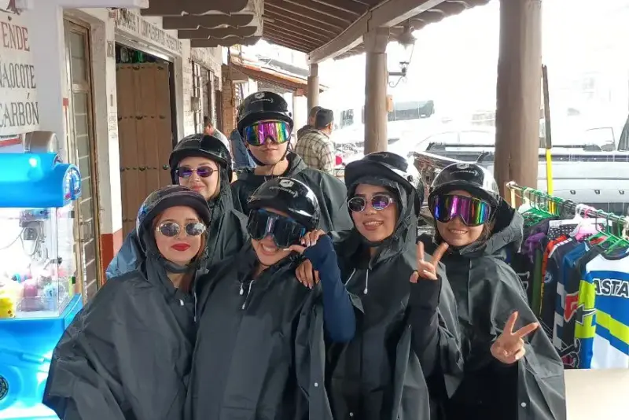

Tour Mazamitla desde Guadalajara
Pueblo Mágico · Bosques de Pinos · Cascadas · Tirolesas · Aire de Montaña Fresco

Tu Día en la Montaña
8–10 horas de aventura (salida temprana, regreso a media tarde/atardecer)
7:30 AM — Recogida en tu hotel
Salida temprana. Café en auto si quieres. Llegaremos a Mazamitla alrededor de las 8:30–9:00 AM.
9:00 AM — Exploración del pueblo principal
Calles coloniales empedradas, plazoletas, tiendas locales, galerías de arte. tu guía sabe cada rincón.
10:30 AM — Cascadas (senderismo fácil–moderado)
Caminata a cascadas ocultas en el bosque de pinos. Agua fresca, aire limpio. Las fotos hablan solas.
12:00 PM — Almuerzo (tu cuenta)
Tu guía te llevará a un restaurante local auténtico. Presupuesta $10–20 USD. Tiempo libre 1–1.5 hrs.
1:30 PM — Tirolesas (opcional, costo adicional)
Vuela sobre el bosque de pinos en tirolesas. Experiencia increíble. $15–25 USD extra. No es obligatorio — muchos solo disfrutan del pueblo.
3:00 PM — Cabalgatas en el bosque (opcional, costo adicional)
Caballos de verdad, no turísticos. Senderos en el bosque. 1–1.5 horas. $20–30 USD extra.
5:00 PM — Regreso a Guadalajara
Llegada aprox. 6:00–6:30 PM. Cansado pero satisfecho.
Preguntas Frecuentes
-
Opción 1 — Pago completo vía Clip (MXN):
Paga el 100% vía link seguro de Clip antes de tu tour.
Vence: 24 horas antes de la fecha del tour.
Ejemplo (4 personas a $247.50 MXN/persona): $990 MXN total vía Clip. -
Opción 2 — Depósito Higlobe + Saldo en efectivo
(USD):
30% de depósito vía transferencia Higlobe a Cross River Bank, 885 Teaneck Road, Teaneck NJ 07666 (USD).
Saldo 70% en efectivo USD el día del tour.
Vence: Depósito Higlobe 72 horas antes / Efectivo al inicio del tour.
Ejemplo (4 personas): $66 USD depósito Higlobe + $154 USD efectivo el día. -
Opción 3 — Pago completo en efectivo (USD):
100% en efectivo USD, pagado al inicio del tour.
Vence: Día del tour.
Nota: La reserva se mantiene pendiente de confirmación de depósito. Reservas solo en efectivo sujetas a disponibilidad.
- Chamarra o suéter (10–15°C más frío que Guadalajara)
- Capa/poncho para lluvia (prevención)
- Zapatos de senderismo o botas (cascadas = senderos mojados)
- Protector solar (altitud = rayos más fuertes)
- Botella de agua reutilizable (llenar en el camino)
- Cámara para fotos épicas
- Efectivo USD o MXN para lunch, tirolesas, caballos (opcionales)
Métodos de Pago
Aceptamos opciones de pago flexible para tu conveniencia. Se requiere un depósito del 30% no reembolsable para asegurar tu reserva.
Efectivo USD
Paga el monto completo o depósito en efectivo USD el día del tour.
Cuándo: Recogida del hotel o inicio del
tour
Qué aceptamos: Billetes USD en efectivo
Nota: Se requiere depósito del 30% con
anticipación
Transferencia Banco Azteca (MXN)
Envía fondos directamente desde tu cuenta bancaria MX.
Banco:
Banco Azteca
CLABE:
127180016171261785
Titular:
Octavio Jacob Orozco
González
Sin comisión para el cliente
Incluye la fecha de tu tour en el memo. Permite 2-3 días hábiles para procesar.
⚠️ Política Importante de Pago y Cancelación:
- Opción 1 — Clip (MXN): Paga el 100% vía link seguro de Clip. Vence 24 horas antes de la fecha del tour.
- Opción 2 — Banco Azteca + Efectivo (USD): Depósito del 30% vía transferencia CLABE 127180016171261785 (Banco Azteca), titular Octavio Jacob Orozco González, vence 72 horas antes del tour. Saldo del 70% en efectivo USD al inicio del tour.
- Opción 3 — Efectivo Completo (USD): 100% en efectivo USD, pagado al inicio del tour. Sujeto a disponibilidad — ningún depósito retiene la fecha.
- Política de No-Show: Cancelación dentro de 24 horas del inicio = pérdida del depósito completo. Cancelaciones con 48+ horas de anticipación reciben crédito para tours futuros.
- Importante: Ninguna reserva se confirma solo por acuerdo verbal. Tu lugar se asegura solo después de la confirmación del depósito.
¿Listo para el aire fresco de la montaña?
Cascadas, bosques de pinos, pueblos coloniales · 8-10 horas en la naturaleza pura.
Reservar Ahora por WhatsAppRespuesta garantizada en menos de 15 minutos